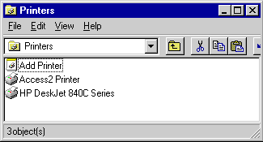

Installing HP DeskJet Printers on Access 2 System
-
Install the HP DeskJet 840C printer in the system software.
Note: If this PC does not have the printer physically connected to it, then proceed to the Install networked printer step.
- Press the [Windows] key or press [Ctrl] + [Esc].
- Select Start > Run.
- On the Run line, type C:\install\Dj840\Disk1\Setup.exe, and then select OK to launch the HP 840C Installation Wizard.
- In the HP 840C Installation Wizard, select Install DeskJet 840C.
- Select Next > LPT1 > Next to begin installation.
- When installation is finished, select Done.
- Press the [Windows] key or press [Ctrl] + [Esc].
- Select Settings > Printers
-
In the Printers window, select the HP DeskJet 840C printer, then select
File, and verify that
Set As Default is check-marked.

-
If the printer will be shared with another Access system, select
File > Properties > Sharing
> Shared. The printer name is shown as HP DeskJe. (truncated). Select
OK.
Note: Once sharing is enabled, the printer appears as a network printer from other networked PCs.
- When finished, close the Printers window.
-
Install the HP DeskJet 550C printer in the system software.
Note: If this PC does not have the printer physically connected to it, then proceed to the Install networked printer step.
- Press the [Windows] key or press [Ctrl] + [Esc].
- Select Start > Settings > Printers.
- In the Printers window, select Add Printer.
- Select My Computer (or local printer) and select Next.
- Select LPT1 > Next.
- For the manufacturer, select HP. For the printer, select DeskJet 550C. Select Next.
- Select Keep existing drivers > Next (if the driver selection option is presented).
- Enter the printer name, Access2 Printer. At the default printer option, select No > Next.
- Press [Ctrl] + [Esc].
- From the Windows NT Start Menu, select Settings > Printers.
-
In the Printers window, select
Access2 Printer > File. Verify that Set As Default is NOT selected.
Note: If using a LaserJet printer, set the Access2 Printer as the default printer.
- In the Printers window, select Access2 Printer > File > Properties. Verify that the driver is HP 550C.
-
If the printer will be shared with another Access system, select
File > Properties > Sharing
> Shared. The printer name is shown as HP DeskJe. (truncated). Select
OK.
Note: Once sharing is enabled, the printer appears as a network printer from other networked PCs.
- When finished, close the Printers window.
-
Install a networked printer on a PC where the printer is not physically connected.
Note: Before a networked printer can be created, it must be configured as "shared" on the PC to which it is physically connected.
- Press the [Windows] key or press [Ctrl] + [Esc].
- Select Start > Settings > Printers.
- In the Printers window, select Add Printer.
-
Select
Network printer > Next. A list of connected systems is displayed.
Note: If no printers are listed, then select: Start > Find > Computer, and type the address of the PC where the printer is physically connected (Example: 192.168.2.3 or \\ instrument serial number).
-
Open the connected system folder to show the available shared printers.
Note: If the shared printer is not available, then confirm that the desired printer is shared on the PC where the printer is physically connected. Once sharing is enabled there, the printer appears in the printers folder of other networked PCs.
- Select the shared DeskJet 840C printer and select Next.
-
For the default printer option, select
Yes > Next.
Note: The print manager requires a resident printer of the same type that is being shared. If a "printer not supported" error message occurs, then a local printer of the same type (840C or LaserJet) must be created before a networked version can be created.
- Disable the print a test page option, and select Finish.
-
Configure the reports setup in the Access2 user interface to use the DeskJet printer.
- From the Main Menu, select Configure > System Setup > Reports Setup.
-
In the Reports Setup screen, select
Access2 Printer from the drop-down printer list.
Note: If this PC does not have the printer physically connected to it, then select the \\xxx\Access2 Printer shared printer from the drop-down list in the Reports Setup screen. (xxx can be the instrument serial number or ID number that identifies the system where the printer is physically connected).
- Select OK to accept the printer choice and exit the Reports Setup screen.
- Print a report and a help page to confirm that the printer is working correctly.